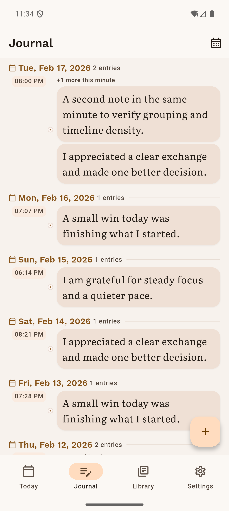
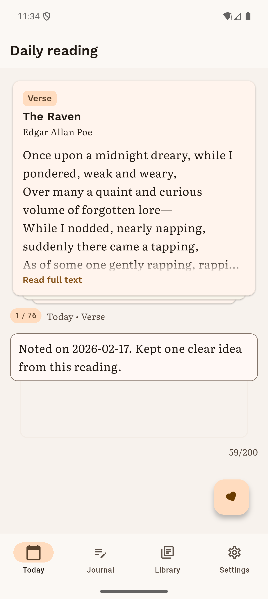
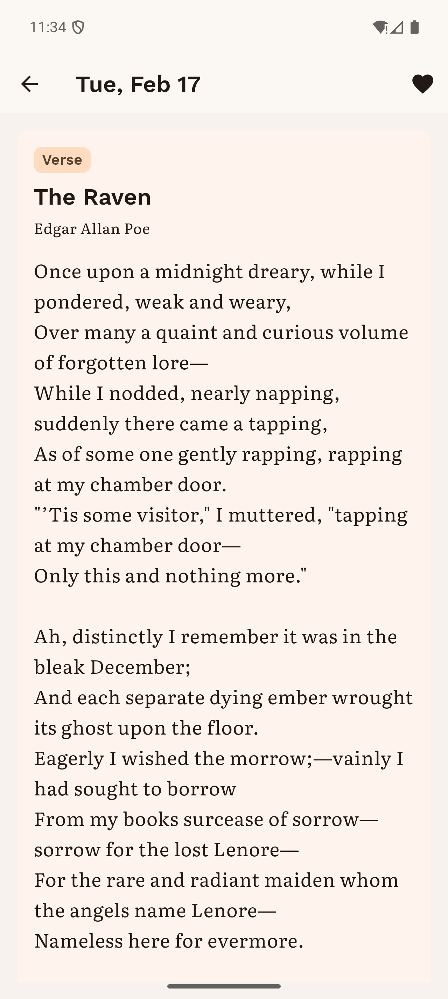
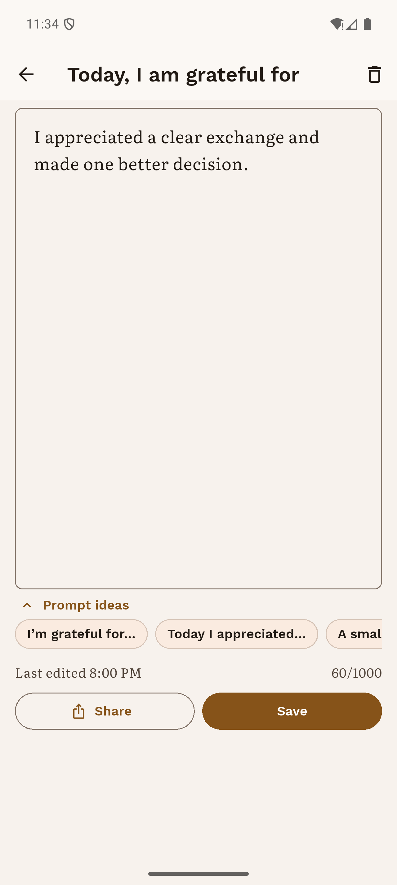
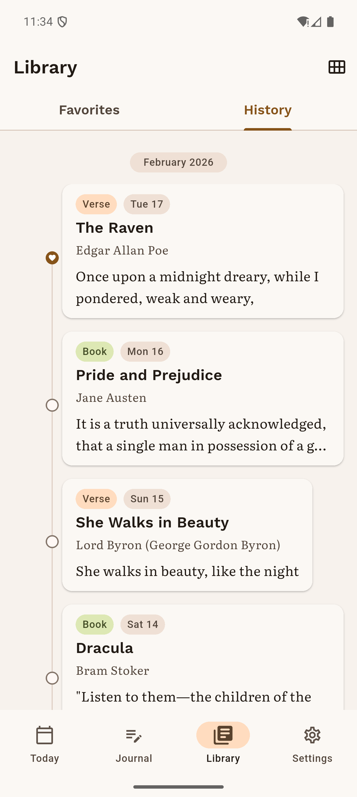
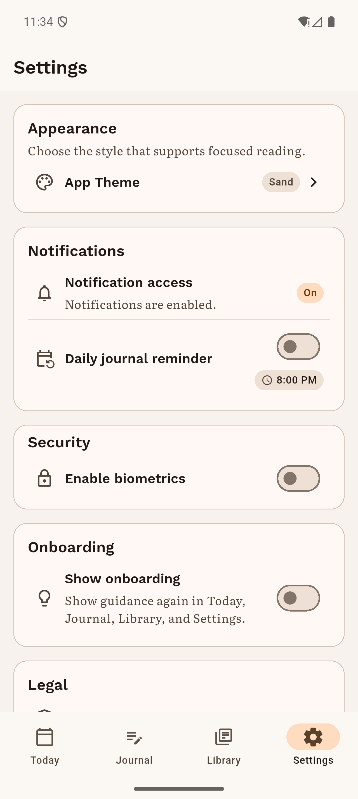

Read with focus
A daily passage gives you one clear place to begin, without a feed, a queue, or extra noise.
One focused reading, one clear note, and a private history you can return to when it matters.
No account required. Notes stay on your device by default.

Journal history keeps short reflections easy to revisit, compare, and continue over time.
How it works
InkBit keeps the loop small enough to repeat: open one reading, leave one brief note, and let the rest of the day stay quiet.
A daily passage gives you one clear place to begin, without a feed, a queue, or extra noise.
Brief reflections keep the ritual light enough to repeat, while still helping the reading stay with you.
Your history, favorites, and notes remain easy to revisit when you want to notice patterns over time.
Product loop
The product stays sparse on purpose: one screen for today, one for full reading, one for reflection, and a few more for the history and controls that support the habit.
Start with one passage, save a line, and leave one reflection before the day moves on.

The reading view stays quiet and lets the passage carry the weight.

A short editor keeps reflection light enough to repeat.

History and favorites keep past readings close without losing context.

Quiet defaults stay easy to review and change.

FAQ
InkBit is a calm journal and reading app built around one daily loop: one passage, one brief note, and one private place to return later.
Not yet. Android is available now, and the iPhone version is planned next.
No. You can use InkBit without creating an account or sharing personal profile information with the app.
Notes, favorites, and reflections stay on your device by default. The privacy policy explains analytics, crash reporting, notifications, and the few cases where service providers are involved.